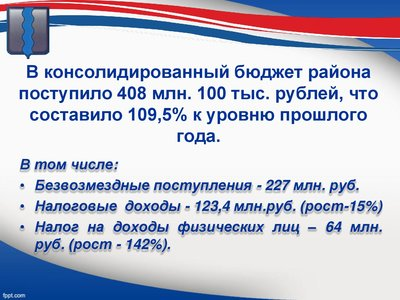
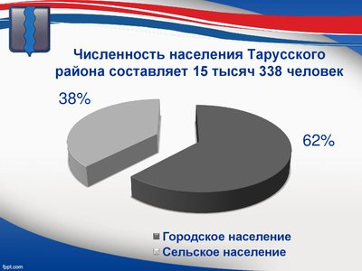
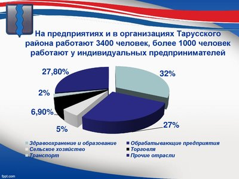
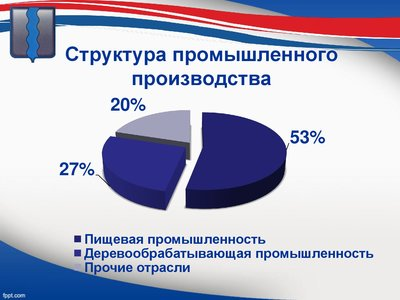
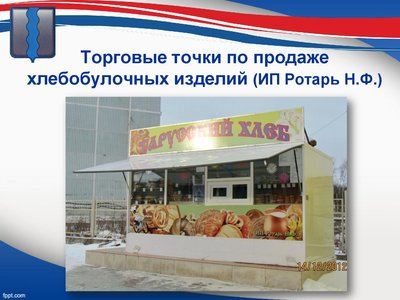
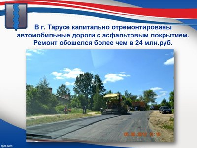
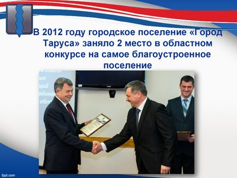
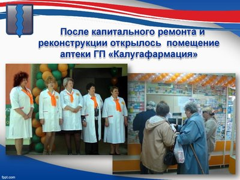
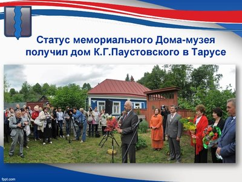
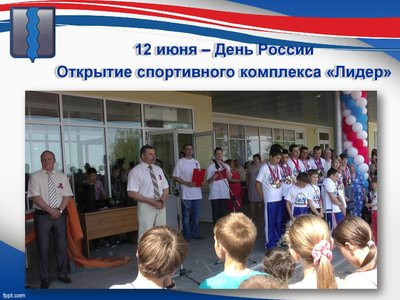

Социально-экономическое положение района
Отчетный доклад главы администрации муниципального района «Тарусский район»
«Об итогах
работы органа распорядительно-исполнительной власти муниципального района в 2012 году, задачах на
2013 год»
Уважаемый Руслан Владимирович! Уважаемые жители Тарусского района, коллеги!
Сегодня я предлагаю вашему вниманию отчет о деятельности органа распорядительно-исполнительной власти муниципального района в минувшем 2012-м году. Социально-экономическое развитие района – процесс непрерывный, и работать над ним надо настойчиво и системно. Этому и была подчинена ежедневная деятельность администрации района, её структурных подразделений, направленная на повышение качества жизни людей, проживающих на нашей территории.
Ушедший год был непростым. Что-то нам удалось в большей степени, что-то - в меньшей, но в целом мы старались работать эффективно. По результатам мониторинга эффективности деятельности органов местного самоуправления городских округов и муниципальных районов в 2011 году, проведенного министерством экономического развития Калужской области, наш район вошел в четверку лучших из 24 муниципальных районов и получил денежный грант в размере 860 тыс.рублей. Говорю о 2011-м годе потому, что результаты стали известны только недавно, в конце 2012 года. Этот ежегодный мониторинг экзамен для органов местного самоуправления, когда оценку нашей работе ставят сами жители района через социологические опросы и дается комплексная оценка власти в основных сферах деятельности образования, здравоохранения и ЖКХ. И конечно, достичь определенных положительных результатов можно только работая в связке, единой командой. В нашем районе именно так и происходит. В своей работе администрация района активно взаимодействует с депутатским корпусом, администрациями городского и сельских поселений, хозяйственным активом, бизнес-сообществом. Все, что удалось достичь,- это наша общая заслуга, уважаемые коллеги! Я благодарю вас за понимание, поддержку, и совместную работу на единый результат. Важнейшим политическим событием весны 2012 года стали выборы Президента Российской Федерации. Организация и проведение выборов на высоком организационном уровне потребовали значительных усилий от органов власти района, городского и сельских поселений, территориальной избирательной комиссии, правоохранительных органов, СМИ. Результат этих выборов мы можем записать себе в актив – нам удалось организовать выборный процесс без каких-либо эксцессов, активизировать явку на выборы населения, процент которой был в нашем районе выше среднеобластного – 69,8% и самым высоким среди районов области, граничащих с Подмосковьем. Так же, как и число голосов, отданных за избранного Президента Владимира Владимировича Путина.
{kind=link}
С точки зрения исполнения бюджета истекший год сложился таким образом. В консолидированный бюджет района поступило 408 миллионов 100 тысяч рублей. Это 109,5% к уровню прошлого года. 227 миллионов 100 тысяч (или 56% в общем объеме доходов) составляют безвозмездные поступления. Налоговые доходы поступили в сумме 123 миллиона 400 тысяч рублей, с ростом в 15%. Наибольший удельный вес в собственных доходах занимает налог на доходы физических лиц – 35,4%. Поступления этого налога принесли в бюджет 64 миллиона рублей, темп роста составил 142% к прошлому году. 21 миллион рублей составило поступление налогов на совокупный доход. Рост этих налоговых поступлений составил 23%, что на 4% меньше поручения Губернатора Калужской области.
57 с половиной миллионов рублей составили в 2012 году неналоговые доходы. Темп их роста 158%. Увеличение обусловлено ростом поступлений от продажи земельных участков (25 миллионов рублей), реализации имущества, находящегося в собственности муниципального района (20 миллионов рублей) и платежей за использование такого имущества, (5 миллионов рублей). К этому можно добавить более 10 миллионов рублей, направленных благотворителями напрямую в социальную сферу района.
Результативно работала комиссия по укреплению бюджетной и налоговой дисциплины, что также способствовало наполняемости бюджета. В 2012 году комиссией проведено 22 заседания с приглашением ста сорока юридических и физических лиц, предпринимателей по вопросам погашения задолженности во все уровни бюджетов и выплате зарплаты не ниже среднеотраслевой. Как результат – с начала года снижена задолженность по платежам в бюджет на 6 миллионов 300 тысяч рублей.
421 миллион рублей составил объем расходов консолидированного бюджета. Это на 33 миллиона рублей больше, чем в 2011 году. По-прежнему бюджет сохраняет социальную направленность, 67% расходов в нем составляют расходы на социальную сферу. Наибольший удельный вес в общей сумме расходов составляют расходы на образование – 184 миллиона 300 тысяч рублей. 69 миллионов 600 тысяч рублей – расходы на социальную политику. 21 миллион 300 тысяч рублей – на культуру, 6 миллионов 700 тысяч рублей – на здравоохранение, 2 миллиона 300 тысяч рублей - расходы на развитие в районе физкультуры и спорта.
Реализуются муниципальные целевые программы. В 2012 году из консолидированного бюджета района финансировалось 19 таких программ. Они были профинансированы на сумму 37 миллионов рублей и доля расходов по программно – целевому подходу выросла на 66,6%. В 2013 году расходы бюджета Тарусского района по програмно-целевому методу достигнут 75%.
{kind=link}
Показатели социально-экономического развития Тарусского района к январю 2013 года складываются следующим образом. Численность населения составляет 15 тысяч 338 человек; 62,3% населения проживает в г.Тарусе, 37,7% - в сельских поселениях района. К сожалению , не удается пока переломить процесс естественной убыли населения: В 2012 году уровень смертности превысил рождаемость в 1,9 раза. Родилось 145 детей, умерло 280 человек. Правда, на показатель смертности серьезно влияет число зарегистрированных нашим ЗАГСом смертей граждан, не проживающих в районе постоянно, таких случаев у нас в прошлом году было 87 или почти третья часть от общего количества.
Положительной тенденцией последних двух лет можно считать спад числа официально зарегистрированных безработных. К началу года количество безработных составляло 33 человека, в то же время число вакантных мест в отраслях экономики района на 1 января 2013 года – триста восемьдесят одно. Иными словами, выбор есть. Число вакансий превышало число безработных в 12 раз. В целях снижения напряженности на рынке труда центром занятости по целевым программам было направлено за год 119 тысяч рублей субсидий.
В экономической деятельности района участвует более 4400 человек. 3400 работают на предприятиях и в организациях, более тысячи – у индивидуальных предпринимателей. Около трети работающего населения было занято в здравоохранении и образовании; 26,5 процентов работает на обрабатывающих предприятиях ; в сельском хозяйстве трудится 5,1 процента; в торговле – 6,9 процента; на транспорте – 2 процента. Остальные 27,8 процента заняты в прочих отраслях. К сожалению, на занятость населения в экономике района по-прежнему негативно влияет более высокий уровень оплаты труда в соседних столичном и подмосковном регионах, что является основной причиной для оттока туда трудовых ресурсов с территории нашего района.
{kind=link}
Большой вклад в развитие экономики района в минувшем году внесли коллективы таких предприятий, как ОАО «Тарусский молочный завод»; ООО «Вознесенье» - выпуск молочной и сырной продукции; ООО «Мастер+2»; ООО «ДВМ» - обработка и изготовление продукции из древесины; ЗАО «Армадекор» - художественная обработка камня; СКБ КП ИКИ РАН – разработка научных технологий и выпуск приборов для космических исследований; ООО «Стройиндустрия» - строительство, в том числе жилищное.
В развитие сельскохозяйственной отрасли весомый вклад внесли коллективы ООО «Трубецкое», ООО «Лопатинское»; фермерские хозяйства Семеновых, Гильфановой, Кузнецова, а также личные подсобные хозяйства Шаповаловых (д.Воскресенки, СП «Село Роща»), Абрамовых (с.Кузьмищево), Лебедева (140 голов лошадей) – с.Барятино, Фролова (700 голов овец, д.Лысая гора СП «Село Лопатино»), чей отраслевой потенциал порой не уступает крестьянско-фермерским хозяйствам.
В отрасли торговли стоит отметить работу ООО «Электа», ООО «Анна», Тарусского райпо и многих предпринимателей, занимающихся малым торгово-закупочным бизнесом. Добрых слов заслуживает работа частных предпринимателей В.И. Дремина и Г.В. Ермилова, занятых пассажирскими перевозками на внутрирайонных автобусных маршрутах. В полку тарусских таксистов в прошлом году появился новый перевозчик с красивым названием «Ромашка» (предприниматель Роман Тарасов), который создал реальную конкуренцию на этом рынке. Им же была учреждена газета Таруся.Ру.
В целом по району в 2012 году предпринимателями и организациями всех отраслей выпущено и отгружено товаров и услуг на 890 миллионов рублей. Рост к 2011 году в действующих ценах на 8%.
{kind=link}
Если говорить об итогах развития отраслей экономики, они в 2012 году таковы. Основное место в структуре промышленного производства занимают пищевая промышленность (53%) и деревообработка (27%). Средняя зарплата в промышленности составляет 17 с половиной тысяч рублей. За год она выросла на 8,3%. В том числе на крупных предприятиях среднемесячная заработная плата составила 21 тысячу рублей, с ростом в 7,2%.
В сельском хозяйстве района в 2012 году работало 4 предприятия: ООО «Трубецкое», ООО «Лопатинское», ЗАО «Заря» и ООО «Колхоз Вознесенье», производящие продукцию животноводства – молоко и мясо, а также фуражное зерно и другие корма для скота. Действует также ООО «Тарусская птицефабрика», производящее в год около 25 миллионов штук куриного яйца. Кстати сегодня это единственное в области сельхоз предприятие по производству куриного яйца.
В минувшем году нашему району в числе семи муниципальных районов области удалось не допустить снижения поголовья дойного стада крупного рогатого скота. В то же время в разных категориях хозяйств за год выросло в три раза поголовье овец и достигло 2700 голов. Молока сельхозпредприятиями за год произведено 3018 тонн, мяса в живом весе – 64 тонны. И в том и в другом случае допущено снижение производства к уровню прошлого года (на 19% и на 55% соответственно), что обусловлено ликвидацией отрасли животноводства в ООО «Колхоз Вознесенье».
Для поддержки личных подсобных хозяйств в 2012 году было выдано кредитов на сумму 13 миллионов 800 тысяч рублей. Получен кредит и ООО «Лопатинским» - на проведение сезонно- полевых работ. На сумму более 5 миллионов рублей сельхозпредприятия получили субсидий из федерального и областного бюджетов.
Объем строительных работ в истекшем году оценивается в 41 миллион рублей. В течение последних пяти лет в районе ежегодно вводится в эксплуатацию более одного квадратного метра жилья на одного жителя. И 2012 год не стал исключением - построено и введено 16 тысяч 300 квадратных метров жилья, немного не дотянув до губернаторского задания в 17 тысяч кв.метров. Построены дополнительные газовые сети высокого и низкого давления протяженностью 4 с половиной километра, в том числе 3 с половиной километра на селе. Уровень газификации района достиг 80%. Отремонтированы и восстановлены электрические сети протяженностью 56,4 километра. За год в район поступило около шестисот двадцати миллионов рублей инвестиций, в том числе собственных вложений предприятий и организаций – 168 миллионов рублей. Это в двое больше, чем в 2011 году. Основные вложения направлены в строительство зданий и сооружений.
В 2013 году важнейшим строительным и социально-значимым объектом для города и района будет новая автономная газовая котельная мощностью 6,1 МВт, пуск которой намечен на конец мая 2013 года. Она стоит 20 миллионов рублей и строится на кредитные деньги и можно прямо сказать: после её запуска в эксплуатацию мы получим гарантированный источник тепловой энергии для нижней части города на десятилетия.
{kind=link}
Для обеспечения населения разнообразными товарами и услугами в отчетный период район получил около восьмисот кв.метров дополнительных торговых площадей. Открылись два супермаркета торговой сети «Дикси», три торговые точки по продаже хлебобулочных изделий, выпечка которых началась осенью 2012 года местной частной пекарней ИП Ротарь.
После реконструкции и приобретения нового оборудования открыт автозаправочный комплекс «Таруса-ОЙЛ» (предприниматель Юзиков В.Н.). На территории комплекса открыты магазин стройматериалов и продуктовый супермаркет.
Розничный товарооборот вырос на 21%, на 19% вырос объем платных услуг населению.
За счет потребительского роста возросли на 11% услуги общественного питания.
Немаловажную роль в социально-экономическом развитии района в последние годы играет малый и средний бизнес. В малом бизнесе занято более 37% работающих в районе. Объем выпуска и отгрузки товаров и услуг малого предпринимательства составляет более половины – 53% - от общего объема товаров и услуг.
Малый и средний бизнес активно участвует в социально-культурном развитии района, благоустройстве города и сельских поселений.
Так, за счет средств ОАО «Тарусский молочный завод» (руководитель Эдуард Суренович Акопян) уложено 150 кв.метров тротуара и 300 погонных метров бордюрного камня по улице Ленина. По инициативе предпринимателя Андрея Борисовича Триченкова, с привлечением средств жителей, благоустроена улица Живова протяженностью около километра.
Второй год в районе действует областная программа «Чистая вода». В рамках этой программы в 2012 году восстановлено около восьми тысяч погонных метров водопроводных сетей во всех поселениях района на сумму около девяти миллионов трехсот тысяч рублей В 2013 году эта программа будет продолжена.
{kind=link}
Капитально отремонтированы автомобильные дороги с асфальтовым покрытием. Это главные города: улицы Ленина, Ворошилова, Серпуховское шоссе, Луначарского, Либкнехта. Ремонт обошелся более чем в 24 миллиона рублей. 63% этих средств выделил местный бюджет, остальные – областной. В 2012 году дорог отремонтировано было больше, в сравнении с 2011 годом, в два раза. Вместе с тем, вопросы и жалобы на состояние межпоселковых дорог звучат все чаще. Нам самим с этой проблемой не справиться. Прошу вашей помощи, Руслан Владимирович и Ольга Владимировна.
По целевой программе произведен капитальный ремонт дворовых территорий и проездов тринадцати многоквартирных домов по ул.Ленина и дома №4 по ул.Голубицкого. Стоимость работ составила более двух с половиной миллионов рублей. 93% финансовых средств получено из областного бюджета – 7% из местного.
Для благоустройства и озеленения территории активно привлекаются жители района.
Благодаря нашей совместной работе и город , и сельские поселения района стали заметно чище и наряднее. Это отмечают и сами тарусяне, и гости нашего района. Если говорить языком цифр, в течение 2012 года ликвидировано более 350 стихийных свалок, оборудовано 101 контейнерная площадка. Для поддержания уличного освещения установлено и отремонтировано 290 светильников. Работа по уличному освещению города и сельских поселений будет продолжаться и дальше. В период с 1 апреля на территории района было проведено почти 500 мероприятий, акций и субботников по благоустройству территорий. В них приняло участие более 10 тысяч человек. Общий объем финансирования сферы благоустройства в текущем году составил почти 50 млн. рублей, из них более 20 млн. рублей за счет частных инвесторов. В этом году активное участие в благоустройстве приняли ООО «Электа», ООО «Ока-Сервис-Пансионат-Якорь», ООО «Стройиндустрия», ООО «Архитектурно-проектное бюро», индивидуальный предприниматель Змановский.
{kind=link}
В течение сезона 2012 года проводились крупномасштабные мероприятия по озеленению города и района. С 9 апреля по 8 мая 2012года был объявлен месячник по благоустройству территорий населенных пунктов Тарусского района.28 апреля была проведена акция «300 скверов», в рамках которой было разбито 16 аллей, посажено 880 деревьев, 222 кустарника. В рамках областной акции единого дня посадки деревьев и кустарников, которая проводилась 19 октября 2012 года, было высажено более 2000 зеленых насаждений. В прошлом году Тарусским районом были взяты и выполнены повышенные обязательства по озеленению: в срок до 5 мая посадить по 1 зеленому насаждению на каждого жителя района, а это более пятнадцати тысяч. Всего же в течение 2012 года было высажено 20,5 тысяч зеленых насаждений. Поэтому не случайно в областном конкурсе на самое благоустроенное поселение город Таруса занял 2 место в своей группе. Задача 2013 года вернуться на 1 место, которое мы имели в 2011 году. Это не только имидж районного центра, но и дополнительные деньги в виде премии, которые используются на дальнейшее благоустройство города. Так, денежные средства в размере 3 миллионов 150 тысяч рублей – грант 2011 года – были направлены на устройство уличного освещения улиц Луговая, Сиреневая, Амелина и тротуаров по улицам Победы и Серпуховское шоссе.
Активное участие в благоустройстве города и района принимают молодежные общественные организации «Молодая гвардия» ЕР и «Российский союз молодежи».
Растет уровень жизни населения района. Среднемесячная заработная плата работающих в экономике района в целом выросла в сравнении с 2011 годом на 25% и составила 17721 рубль.
Доля получателей пенсий и пособий в общей численности населения составляет 30%. Среднемесячная пенсия в районе – 9460 руб., на 10% выше, чем в 2011 году.
В целях социальной защиты населения предоставлялись адресные льготы и субсидии. Субсидией по оплате услуг ЖКХ воспользовалась 151 семья – общая сумма 2 миллиона 286 тысяч рублей. Льготы по оплате ЖКУ согласно действующему законодательству получили 4632 человека на сумму около двадцати семи с половиной миллионов рублей.
Отдельно хочу остановиться на развитии туризма – отрасли, которая является стратегической в социально-экономическом развитии нашей территории. В районе эту работу координирует муниципальный туристско-информационный центр, созданный в 2011 году. В минувшем году его работа была направлена на продвижение Тарусского района как места, привлекательного для туристов, посредством издания туристической карты района, участия в телепроектах областного и центрального телевидения. Была предоставлена информация об объектах туризма для сайта министерства спорта, туризма и молодежной политики области «Калужский край» для туристических терминалов и путеводителей. Можно отметить, что за последние пару лет развитие туристической отрасли в районе получило новое направление. Наряду с традиционным для Тарусы культурно-событийным туризмом активно развивается агротуризм. В 2012 году продолжили свою работу созданные ранее субъекты агротуризма, такие как мотель «Ольгинка», ПТБ «Элида», «Усадьба Отрада», база отдыха Крутой Яр», гостевой дом «Ладушки», кафе «Усадьба» в д.Похвиснево. Начала работать база отдыха «Бобровый мыс». В целях развития агротуризма получило господдержку в сумме 194-х тысяч рублей крестьянско-фермерское хозяйство Туаева. Готовы к приему туристов агроусадьбы Шаповалова в д.Воскресенки, Лихоманова в д.Никитино, Фонина в д.Игнатовское, кафе «Дворик» предпринимателя Абдулаева в д.Ильинское, конюшня в личном подсобном хозяйстве Рогова в с.Кузьмищево, усадьба Семеновых в с.Лопатино и т.д. – всего 13 агроусадеб. Еще 13 готовятся распахнуть двери перед гостями в этом, 2013-м году. Как говорится, процесс пошел, и это радует.
Событийный туризм также пополнился яркими страницами, некоторые из которых претендуют в будущем называться визитной карточкой Тарусы. Это праздники Масленницы, Ивана Купалы, детский фестиваль «Петухи да гуси в городе Тарусе». Объем платных услуг, оказанных в 2012 году туристической отраслью района, составил 65 миллионов рублей. Несомненно, эта огромная и интересная работа будет в этом году продолжена.Именно за это звено потянув, мы можем вытянуть всю цепь, подняв экономику района на качественно новый уровень. В конце прошлого года в тестовом режиме начал принимать гостей оздоровительный комплекс ООО «Волна» на территории бывшего пионерлагеря «Дзержинец», инвестором Борисовым Юрием Михайловичем в который уже вложено 500 миллионов рублей инвестиций. Прорабатывается вопрос о строительстве гольфклуба в районе села «Кузьмищево». В том же районе рядом с домом отдыха «Березовая роща» на берегу реки Оки запланированы съемки художественного исторического фильма «Викинг» на студии «Дирекция кино» режиссером Андреем Кравчуком, известным по кинофильму «Адмирал».
В сфере образования в 2012 году в районе действуют 7 общеобразовательных школ, 5 дошкольных образовательных учреждений, два учреждения дополнительного образования детей. В течение трех последних лет численность учащихся в школах района держится примерно на одном уровне – 1256 человек. Причем доля выпускников, продолжающих обучение на старшей ступени школы, составляет ровно половину. Вторая половина подростков стремится раньше получить профессию и ориентируется на образовательные учреждения среднего профессионального звена. В 2012 году процент выпускников основной школы, поступивших в учреждения среднего профобразования вырос до шестидесяти пяти.
Из общего числа выпускников 11-х классов 85% поступили в высшие учебные заведения. Это на 11% больше, чем по итогам предыдущего учебного года. Выросло с двух до семи человек число золотых медалистов в школах района, а доля золотых и серебряных медалистов составила 11% от общего числа выпускников. В сравнении с 2011 годом наблюдается рост в выборе выпускниками для дальнейшего обучения образовательных учреждений Калужской области. Этот говорит о том, что несмотря на близость района к столичному и подмосковному регионам, родная область становится все более привлекательной для тарусской молодежи, выбирающей ее для учебы, а в дальнейшем, и для работы.
В 2012 году ликвидирована очередь детей трех-семи лет в детские дошкольные учреждения. Тем самым выполнена задача, поставленная перед районом Губернатором области. В 2013 году планируется открытие еще одной группы на базе детского сада «Березка», что позволит окончательно решить вопрос на перспективу. Останется, дорогие коллеги, только повышать рождаемость!
Назрел и вопрос открытия в районе Центра раннего развития детей, где реализовывались бы программы дополнительного развития личностных способностей малышей и подростков.
Благодаря реализации национальной инициативы «Наша новая школа» и грамотной политики Правительства Калужской области в районе, как и в целом по области, выросла заработная плата педагогов. В 2012 году она в среднем составляет 25 тысяч 570 рублей для работников общеобразовательных школ, 15 тысяч 850 рублей для работников дошкольных образовательных учреждений, 15 тысяч 584 рубля для работников учреждений дополнительного образования.
Совершенствуется материально-техническое оснащение учебного процесса. В 2012 году школами района приобретено оборудование за счет средств областного и районного бюджетов на 4 миллиона 86 тысяч рублей. Проведены ремонтные работы в Тарусском Доме Детского Творчества, детских садах «Березка» и «Солнышко», осуществлен ремонт отопления и холла первого этажа в городской школе №1, принята в эксплуатацию после реконструкции помещения группа детсада на базе городской школы №2 – на общую сумму более 5 миллионов рублей за счет средств районного бюджета и на сумму 5 миллионов рублей за счет средств благотворителей.
И коли уж речь зашла о частно-государственном партнерстве, не могу не отметить: в 2012 году частными благотворителями в развитие учреждений социальной сферы района направлено в общей сложности более десяти миллионов рублей! Это даже не инвестиции, это социальные проекты – чистая благотворительность. Хочу с этой трибуны выразить благодарность этим людям, меценатам, искренне любящим Тарусу и таким вот образом воплощающим свою любовь.
Наблюдается рост числа детей, получающих дополнительное образование в Доме Детского Творчества и Детско-юношеской спортивной школе – на 16, и на 7% соответственно.
Растет и качество дополнительного образования, что можно видеть по количеству призовых мест, нашими детьми на спортивных соревнованиях и творческих конкурсах разного уровня – от муниципальных до международных.
С полным основанием могу сказать: главное богатство тарусской земли и предмет нашей особой гордости – это наши дети. Они у нас замечательные – талантливые, одаренные, творческие, с собственным взглядом в будущее. Наш долг – сделать их жизнь счастливой. Для этого, собственно, мы все и работаем, каждый на своем месте.
Медицинская помощь в районе оказывается в ГБУЗ КО «ЦРБ Тарусского района», Лопатинской амбулатории и на восьми ФАПах. В поликлинике ведется прием по 16 специальностям. В ЦРБ работает 30 врачей, 9 из них совместители. Средних медицинских работников – 60. Коэффициент совместительства – 1,7. В районе ощущается острый дефицит врачей узких специальностей.
Нами принимаются меры по закреплению в районе медицинских кадров. В рамках реализации Целевой программы «Закрепление медицинских кадров в ЦРБ и обеспечение их жильем на 2010-2015 г.г.» в 2012 году было приобретено и выделено 2 служебные квартиры для врачей – 1-комнатная и 3-комнатная.
В 2012 году по целевой подготовке в медицинские вузы поступило 2 человека. В настоящее время по целевой программе обучается 7 человек. За счет средств муниципального бюджета – 1 человек в медицинском вузе и 4 человека – в Калужском медицинском базовом колледже.
Из средств муниципального бюджета в 2012 году производилась ежемесячная доплата к зарплате работников отделения «Скорой медицинской помощи» - за оказание экстренной помощи. Всего эти доплаты составили миллион 180 тысяч рублей.
Среднемесячная зарплата в отрасли составила в 2012 году: у врачей – 30 тысяч рублей; у среднего медперсонала – 17625 рублей.
За два последних года из федерального и областного бюджетов по программе «Модернизация здравоохранения» для проведения ремонтных работ в медучреждениях выделено около 20 миллионов рублей, в том числе 17 миллионов 106 тысяч – федеральных средств, 2 миллиона 506 тысяч – областных. В больнице были проведены следующие работы: заменены системы водоснабжения, отопления и водоотведения; два лифта; оконных блоков; отремонтирована кровля перехода; гинекологическое и детское отделения, рентгенкабинет; пищеблок. Проведен ремонт стоматологического кабинета и за счет областного бюджета приобретена новая стоматологическая установка.
В рамках реализации программы модернизации здравоохранения Калужской области в 2012 году для Тарусской ЦРБ было закуплено оборудование более чем на 18 миллионов рублей, в том числе передвижной рентгеновский аппарат, ультразвуковой диагностический аппарат высокого класса, 5 санитарных автомобилей «УАЗ» и другое необходимое оборудование.
На 101,5% выполнена в 2012 году программа дополнительной диспансеризации работающего населения.
{kind=link}
В районе действует достаточно разветвленная сеть аптек, удовлетворяющих запросы населения в лекарственных средствах и предметах медицинского ухода. В апреле 2012 года после капитального ремонта и реставрации открылось помещение аптеки ГП «Калугафармация», которое последние годы было в аварийном состоянии. Мне пришлось неоднократно встречаться с руководителем этого предприятия Кузнецовым Сергеем Викторовичем, чтобы население получило в одном здании и аптеку и новый супермаркет.
Социальную защиту населению осуществляет соответствующий отдел администрации. На территории района работает отделение социальной помощи по уходу на дому Тарусского дома-интерната, благотворительный фонд «Радуга тарусская». В 2012 году возобновила свою работу Служба патронажа беременных женщин и молодых семей.
Различные выплаты, компенсации, пособия получают 5770 человек. Общая сумма этих выплат составила в 2012 году более пятидесяти трех миллионов рублей или на 6 миллионов рублей больше, чем в 2011 году.
28 семейных пар получили единовременную материальную помощь в связи с юбилейными датами супружества. 42 человека получили звание «Ветеран труда». 13 человек – звание «Ветеран труда Калужской области».
2012 год был объявлен годом культуры в Тарусском районе. Что греха таить, долгие годы, особенно перестроечные, культура финансировалась повсеместно по остаточному принципу, и это не могло не иметь для нее печальных последствий. У себя в районе мы решили исправить ситуацию. Была принята муниципальная программа «Модернизация культуры Тарусского района на 2012 год», которая позволила активизировать деятельность учреждений культуры и привлечь дополнительные финансовые средства на ремонт и содержание зданий. Созданы два муниципальных бюджетных учреждения культуры – «Районный центр досуга населения» и «Централизованная библиотечная система», 12 июня, в День России, после ремонта открыт Дом культуры в с.Некрасово, на ремонт которого израсходовано 500 тысяч рублей бюджетных и спонсорских средств. Истекший год вообще стал знаковым в развитии культуры района. Кроме того, что мы отметили два больших литературных юбилея – 120-летие со дня рождения Константина Георгиевича Паустовского и 120-летие со дня рождения Марины Ивановны Цветаевой, мы еще и впервые отпраздновали 24 августа День района. Надеюсь это станет теперь традицией. К Дню района было приурочено открытие памятника выдающемуся писателю Константину Паустовскому на набережной Оки (по проекту и на средства скульптора Вадима Церковникова). В этот же день был открыт Дом культуры в селе Вознесенье, на ремонт которого было израсходовано около 7 миллионов рублей из бюджета сельского поселения. День Тарусского района был ознаменован очень приятным для всех событием. Впервые в истории района после учреждения, было присвоено высокое звание «Почетный гражданин Тарусского района». Его был удостоен благочинный 6-го округа Калужской епархии протоиерей Леонид Гвоздев – всеми нами уважаемый отец Леонид, стоявший у истоков возрождения православия и храмов на тарусской земле. В конце 2012 года завершены работы по росписи храма в честь Успения Пресвятой Богородицы в с.Истомино, приход которого стараниями настоятеля иерея Андрея Мишакина вырос до 200 человек. За два года в храме было крещено более 450 младенцев.
В рамках Года культуры произведена замена одежды сцены киноконцертного зала за счет средств областного бюджета, сделаны ремонт кровли и замена окон в детской библиотеке имени Богданова на сумму более миллиона рублей за счет средств частного инвестора. Также за счет благотворительных безвозмездных поступлений ведется ремонт и укрепление материальной базы Детской школы искусств. 1 сентября этого года распахнет свои двери художественное отделение ДШИ в новом здании (бывшее красное здание ЦРБ), выкупленном на аукционе для этих целей, меценатом Исмаилом Ахметовым, которое сейчас активно ремонтируется и будет полностью оснащено также за его счет. В нем предполагается открытие классов живописи, рисунка, композиции, лепки и скульптуры, мозаики, истории искусств.
Уже четыре года в районе выходит ежеквартальный литературно-художественный журнал для семейного чтения «Траектория Творчества».В 2012 году он распространялся во все библиотеки Калужской области. Для многих любителей поэзии и прозы он уже стал любимым, читаемым и необходимым журналом.
{kind=link}
Юбилейный 2012 год был отмечен областным фестивалем народного творчества «По старой по дороге по Калужской» (к 120-летию Марины Цветаевой) и открытием в городе еще одного музея – статус мемориального Дома-музея получил дом Константина Паустовского в Тарусе. По инициативе частного благотворителя Александра Щипкова, в свое время подарившего городу бюст Ивана Владимировича Цветаева, в октябре 2012 года в Тарусе появилась мемориальная аллея Ивана Цветаева, великого русского просветителя, ученого, основателя Музея изящных искусств, ныне художественного музея, в Москве.
Вообще, 2012 год был полон культурных юбилеев, значимых для города и района. Летом прошел юбилейный, 20-й по счету фестиваль Фонда Святослава Рихтера. Свое 30-летие отметил народный коллектив-хор ветеранов войны и труда. 10 лет исполнилось Тарусскому народному театру под руководством Владимира Иванова – но это только под руководством этого талантливого человека театр действует 10 лет, а корнями своими он уходит в глубокую тарусскую историю, чего стоят одни премьеры в знаменательном «Соляном амбаре», афиши к которым рисовал великий русский художник Поленов! В общем, в Тарусском районе культура – понятие всеобъемлющее. Традиции прирастают новациями, в работу учреждений культуры приходят инновационные технологии. Сельские Дома культуры разрабатывают культурно-досуговые проекты, подключена к Интернету детская библиотека, 8 Домов культуры используют в работе компьютеры. И впереди еще много неотложных задач – и по укреплению материально-технической базы, и по формированию кадрового потенциала, и по обмену профессиональным опытом, и множество других. Для продолжения этой работы на 2013-2015 годы принята новая муниципальная целевая программа развития культуры Тарусского района.
{kind=link}
В ногу с культурно-досуговыми мероприятиями в нашем районе идет популяризация массовых видов спорта, привлечение к занятиям физкультурой широких слоев населения, и в первую очередь – молодежи. 12 июня 2012 года в День России - в районе произошло событие, которого тарусяне ждали десятки лет – был открыт спортивный комплекс «Лидер». Открытие современного физкультурно-оздоровительного комплекса незамедлило принести свой весомый результат. Активизировалась спортивная работа в районе. Подробнее об этом расскажет в своем выступлении директор ДЮСШ, на баланс которой передан спортивный комплекс, Трошина В.С.
В конце 2012 года в спорткомплексе «Лидер» состоялись показательные выступления демонстрационной команды спортсменов из Южной Кореи, которая совместно с делегацией Университета тхэквондо приехала с предложением развивать этот олимпийский вид спорта совместно с Федерацией тхэквондо Калужской области на базе нашего района. Мы это предложение охотно поддержали и в начале февраля в Тарусе пройдет открытый фестиваль по тхэквондо «Золотой лев» с более чем 400 участников из разных регионов и городов Российской Федерации.
Кроме развития спортивного движения, немало делается и по пропаганде здорового образа жизни. Здесь у района тоже есть свои отличные, годами наработанные традиции, которые уже перешагнули границы района и привлекают людей из других районов области и даже из других регионов. Я говорю о традиционном летнем туристическом слете работающей молодежи «Хомяковский брод». Проходит он очень массово, с большим энтузиазмом в одном из красивейших и заповедных мест района, на речке Тарусе. Молодые люди заряжаются на нем бодростью и энергией, наверное, на весь год. И 2012 год не стал исключением. Многим запомнились счастливые дни и командный дух «Хомяковского брода» - 2012, Тарусская молодежь умеет работать, умеет и отдыхать.
Вообще, молодежная политика является одним из приоритетных направлений в работе исполнительной власти района. В районе действуют долгосрочные муниципальные целевые программы «Молодежи Тарусского района на 2011-2017 годы»; «Комплексные меры противодействия употреблению наркотических средств, психотропных веществ и их незаконному обороту на 2013-2015 годы», «Организация отдыха, оздоровления и занятости детей и подростков в Тарусском районе в 2013-2015г.г.» - две последние программы приняты в 2012 году. Кстати работа антинаркотической комиссии Тарусского района в 2012 году была признана областным Управлением Госнаркоконтроля лучшей в области. Традиционно приоритетным направлением в работе с молодежью является патриотическое воспитание. В районе действуют школьные музеи патриотической направленности, проводятся акции «Георгиевская ленточка», «Солдатский платок», «Поздравительная открытка», «Свет в окне» и другие. Уникальным опытом в военно-патриотическом воспитании детей и подростков, попавших в трудную жизненную ситуацию, является проведение летнего туристско-спортивного лагеря «Победи себя», помощь в организации которого оказывают преподаватели профлицея №34 и члены Тарусского отделения общественной организации ветеранов боевых действий «Боевое братство». 21 июня 2012 года уже во второй раз, в районе проведена акция «Свеча памяти», собирающая на городской площади сотни людей. Эта акция оказывает глубокое влияние на детей и молодежь района. В прошлом году она прошла также и в селе Истомино. 19 апреля 2012года в городской школе №1, носящей имя легендарного командира 33-й армии Героя России Михаила Ефремова, был открыт бюст Герою, подаренный потомками Михаила Григорьевича Ефремова. (Они кстати, недавно выбрали наш город местом своего постоянного проживания: правнучка героя Татьяна Ефремова, с мужем и двумя детьми купили дом в Тарусе, продав квартиру в Подмосковье.) На базе профессионального лицея №34 действует поисковый отряд «Десант», ежегодно участвующий в поисковых экспедициях. В Тарусской школе №2 действуют два кадетских класса – по линии МВД и по линии МЧС. Налажено взаимодействие в деле воспитания молодежи с воинской частью 92628, дислоцирующейся на территории района.
Молодежь активно участвует в трудовых десантах по санитарной очистке и благоустройству территории в весенний период. Учащиеся профлицея – члены местного отделения «Молодой гвардии» «Единая Россия» - и школьники – активные участники волонтерского движения по оказанию помощи Тарусскому Дому-интернату для престарелых и инвалидов, старейшему в области социальному учреждению, отметившему в прошлом году свое 70-летие. Особое внимание уделяется организации работ по благоустройству воинских захоронений на территории района. В 2012 году к празднику Победы учащимися школ приведены в порядок территории всех 13 братских могил и воинских захоронений.
Молодежная политика в районе формируется как одно из направлений социальной политики. В муниципальном районе проживает 1276 детей в возрасте от 7 до 17 лет. 875 детей требуют особого внимания и заботы власти. Среди них дети из многодетных и малообеспеченных семей, дети-инвалиды, сироты, дети ликвидаторов Чернобыльской катастрофы и т.д. В 2012 году круглогодичным отдыхом, оздоровлением, временной занятостью были охвачены все дети. Все 1276. В летний период в районе работали спортивно-туристические палаточные лагеря с круглосуточным пребыванием: «Истоминские тропы» - 2 смены по 30 детей каждая; детский православный лагерь «Успенский» в с.Барятино для 25 детей. Ребята в этом лагере второй год расчищают Свято-Успенский храм и храмовую территорию. С ними работают волонтеры – члены Молодежного совета, созданного три года назад, при главе администрации района, духовным наставником участников лагеря является отец Андрей.
В мае-июне в трех школах района были организованы пришкольные трудовые бригады. Их труд был оплачен Центром занятости населения и администрацией района. Всего на организацию оздоровительной кампании в 2012 году из местного бюджета израсходовано более миллиона четырехсот тысяч рублей.
Не меньшее внимание уделяется и развитию творческого потенциала талантливой молодежи. В районе действует постановление главы администрации «О поддержке талантливой молодежи и ее наставников», согласно которому в 2012 году 7-ми победителям районного конкурса из числа одаренной учащейся молодежи вручены премии и дипломы, и 6 победителям гранты имени ученого Власова и писателя Богданова.
Проводятся и другие акции и мероприятия в рамках реализации молодежной политики – перечислить все их просто не предоставляется возможным.
Работа с заявлениями и жалобами граждан- неотъемлемая часть нашей деятельности. В 2012 году в администрацию района поступило (и, соответственно, рассмотрено) 1668 обращений граждан. Это несколько меньше, чем в 2011 году (тогда их было 1936). Несколько уменьшилось количество обращений по вопросам здравоохранения, образования и улучшения жилищных условий. Вместе с тем увеличилось их количество по вопросам социального обеспечения, транспорта и торговли. Количество обращений по вопросам ЖКХ, трудоустройства, культуры, строительства осталось на прежнем уровне. На личный прием к главе администрации района пришло за год 102 человека. Количество личных обращений граждан к главе уменьшилось на 35% в сравнении с предыдущим годом. высказанными в письменном виде, или непосредственно – на регулярных личных приемах главы администрации района.
Особая форма работы – защита интересов администрации и граждан Тарусского района в судебном порядке. За прошедший период отдел правового обеспечения представлял эти интересы более чем в двухстах судебных заседаниях различных инстанций. В указанный период было подготовлено и направлено в суд исковое заявление о возврате земельного участка на берегу Оки – который был удовлетворен арбитражным судом Калужской области.
За год было осуществлено 18 проверок исполнения земельного законодательства юридическими и физическими лицами. По результатам проверок пять лиц привлечено к административной ответственности.
В заключение я хочу сказать: все позитивные перемены на тарусской земле, все добрые результаты нашего с вами совместного труда стали возможны благодаря постоянному требовательному и чуткому вниманию к проблемам района со стороны руководства области, лично Губернатора Анатолия Дмитриевича Артамонова.
Так же благодарю членов Правительства Калужской области Смоленского Руслана Владимировича, который трижды был в нашем районе в прошлом году, куратора Тарусского района от Правительства области – министра конкурентной политики и тарифов Николая Викторовича Владимирова, нашего депутата Законодательного Собрания области Чигищева Владимира Ивановича – за профессиональную и дружескую поддержку, руководителей областных служб, ведомств, а также федеральных органов государственной власти в Калужской области и лично руководителя Калугастата Дмитриева Вячеслава Валентиновича за постоянную помощь, оказываемую нам в нашей работе. Спасибо вам, уважаемые коллеги, представители социально-экономического актива района. Все, о чем было сказано сегодня,- результат нашего общего напряженного труда. Впереди у нас – большие планы и задачи. Год уже начался. Вряд ли он будет простым и легким – у нас таких не бывает. Но, я верю, что все вместе, единой командой, мы справимся с любыми трудностями и вызовами. Дорогу осилит идущий! Удачи нам всем на этом пути!
Спасибо за внимание.
Глава администрации МР "Тарусский район"
Е.М. Мальцев